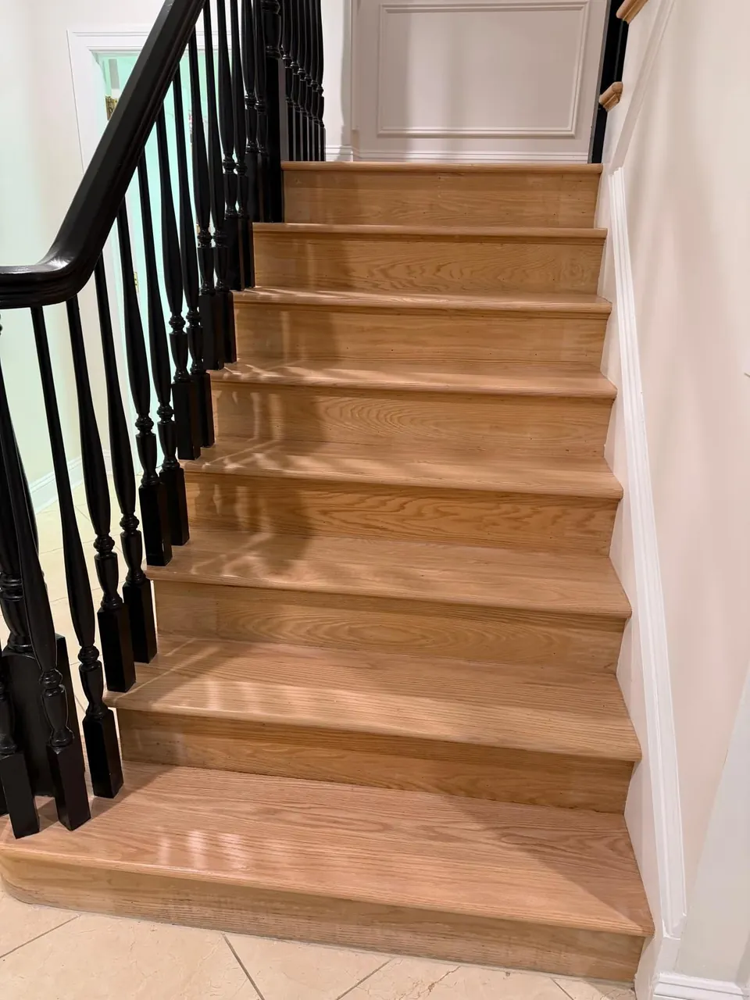

Stair refinishing in Linden and Union County. We refinish them or rebuild them.
Stairs get more wear than any floor in the house. Existing treads sanded and refinished, or new oak treads and risers over the old staircase, stained to match the floor above and below. Serving Linden, Union County and North Jersey.

 Before
After
Before
After
Staircase rebuild and refinish. Drag the handle.
Stairs are detail work, and it's where crews cut corners.
Every tread is edged by hand, every riser is cut in, and the nosing has to line up with the floor above and below. It's slower than a floor, and it shows when it's rushed.
This one got new oak treads, painted risers and a new railing, finished to match the hallway floor.
Refinish what's there, or new oak treads and risers.
We'll tell you at the estimate which one your staircase needs.
Refinish what's there
If the treads are solid wood in decent shape, we sand them to bare wood, stain to match the floor, and apply the same finish. Risers can be refinished in wood or painted white for the classic look.
New oak treads and risers
If the stairs are carpeted over plywood, badly worn, or pine that's splitting, we install new solid oak treads and new risers over the existing stringers. This is the "carpet to hardwood" conversion most people are picturing.
A typical straight staircase takes 2 to 4 days.
Carpet out
Carpet, tack strip and staples removed.
Treads, risers, nosings
New ones installed where needed, cut in to the floor above and below.
Sanding
By hand and machine, every tread edged by hand.
Stain to match
Matched to the adjoining floor, landings and hallway thresholds done at the same time.
Finish coats
Satin sheen recommended for grip and durability.
If it's the only way upstairs, we can do every other tread first so you still have a path, then finish the rest. We'll plan it with you before we start.

Handrails and newel posts refinished to match.
We refinish wood handrails and newel posts along with the treads. If you're replacing wood balusters with iron, coordinate it with us and we'll schedule the finish work around it.
Homeowners who had their stairs done with the floor.
Renato arrived even earlier than scheduled. He did a fantastic job sanding, staining, and refinishing multiple rooms and stairs. Great to work with!
Excellent renovation of our home flooring. The team was friendly, responsive, and highly organized. Impeccable, clean work throughout.
My floors look beautiful! Costa was very detailed in helping me find the right color and gloss. Everything came out even better than I had hoped.
Stair questions we hear every week.
A typical straight staircase takes 2 to 4 days. Stairs are quoted with the floor or on their own.
If it's the only way upstairs, we can do every other tread first so you still have a path, then finish the rest. We plan it with you before we start.
Yes. If the stairs are carpeted over plywood, we install new solid oak treads and new risers over the existing stringers. That's the carpet-to-hardwood conversion most people are picturing.
We refinish wood handrails and newel posts to match. If you're replacing wood balusters with iron, coordinate it with us and we'll schedule the finish work around it.
Treads, risers and rails we've refinished or rebuilt.
Straight runs, landings and two-story foyers. Click any photo to see it larger.


Stairs are usually done with the floor.

Hardwood floor refinishing
Sand to bare wood, optional stain, two or three coats of finish. The job that changes a house the most.
Refinishing details
Floor staining
Natural, brown, gray or dark. Samples tested on your sanded floor so you choose from the real thing.
Staining details
Hardwood & LVP installation
Solid and engineered hardwood, or luxury vinyl plank. Old floor removal and subfloor prep included.
Installation details